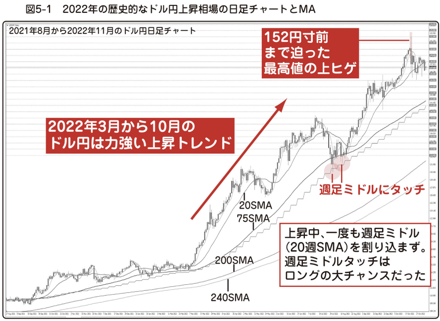
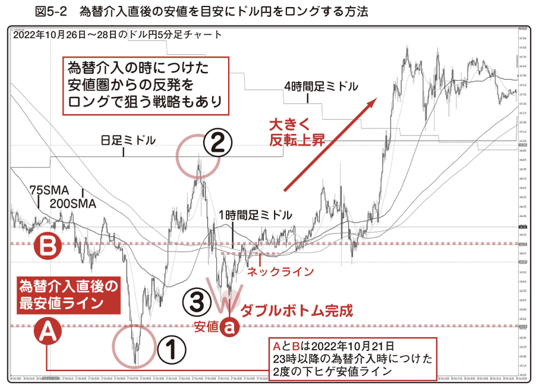
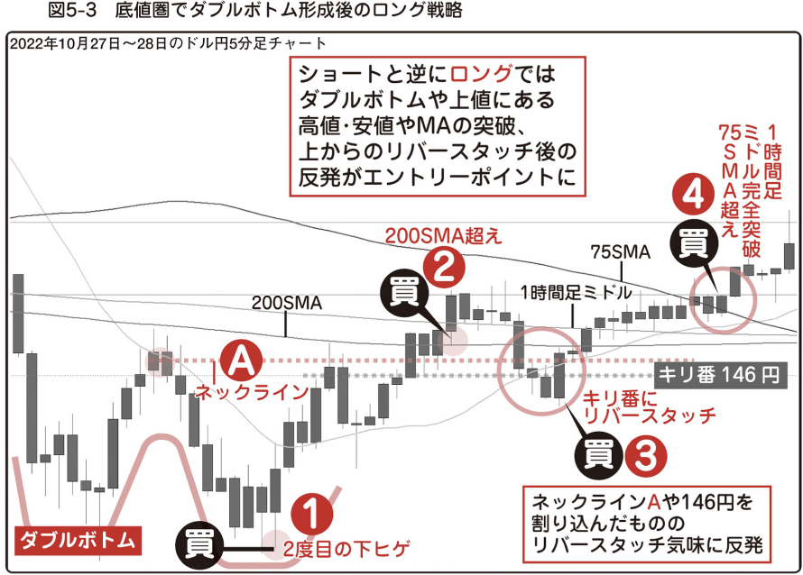
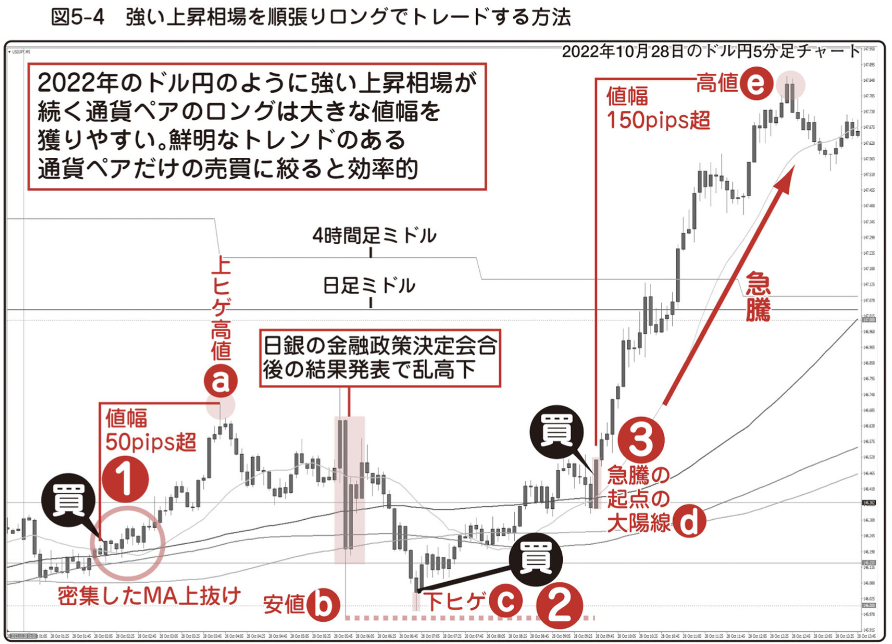

2022年 3月までの ドル円（USDJPY）は長年、
安値 100円台、高値 115円台という狭い Zone でレンジ相場が続いてきました。
しかし、2022年 3月から 10月は日米金利差の拡大や世界的なドル高トレンドの影響を受けて、力強い上昇トレンドが続きました。
レンジ相場で推移[すいい]
추이しやすい通貨ペアと、力強いトレンドで動く通貨ペアではトレード方法も少し違ってきます。
まずは 2022年 3月から 10月に、急激[きゅうげき]
급격한な上昇トレンド相場に移行した ドル円（USDJPY）について考えてみます。
図5-1 は 2021年 8月から 2022年 11月までの ドル円（USDJPY）の日足チャートです。
前半の横ばい相場から後半は 激しい上昇相場に雰囲気がガラリと変わっているのが分かります。

図5-1 : 2022年の歴史的な ドル円（USDJPY）上昇相場の日足チャートとMA
2022年 3月以降は強い上昇相場だったわけですから、 ドル円（USDJPY）ロングに絞って取引するのが、結果的に 2022年で利益を一番出しやすい通貨ペアと方向だったと言えます。
図5-1 右側の上昇トレンドの局面を見ると、ローソク足が 週足ミドル を下に割り込んだことは一度もありません。
週足ミドル タッチでロングエントリーすれば、中長期投資でも慕大な利益を得ることが出来ました。
これだけ上昇が続いているわけですから、第２章 や 第３章 で指摘したショートで狙えるポイントを 180度正反対 にすれば良い。
すなわち、
- ● ４時間足 や 日足、週足チャート上の重要な安値ライン や サポートラインまで 下がったところでロング
- ● ダブルボトム、トリプルポトム、逆三尊など大底圏での上昇転換を示すチャートパターンでロング
- ● ４時間足ミドル、日足ミドルがもし上値にあれば、そこを上に超えたり、超えた後、リバースタッチしたところでロング
- ● キリ番や１時間足ミドル超え & リバースタッチの再上昇でロング
- ● 上昇が続く間は出来るだけ利を伸ばす。 トレンドが非常に鮮明なので利確を焦らなくても大丈夫
という感じでしたね。
具体例を見て行きましょう。
図5-2 は 2022年 10月 21日の深夜 23時から 22日 0時頃に NY 市場で政府・日銀がドル売り円買い介入を行った
翌週、10月 26日 から 28日にかけての ５分足チャートです。

図5-2: 為替介入直後の安値を目安に ドル円（USDJPY）をロングする方法
一時 152円寸前[ すんぜん ] と読みます。
직전
「寸前」の意味は、ほとんど同時といってよいほどわずか（＝寸）の前。直前。」まで上昇した ドル円（USDJPY）は、介入によって 145 ～ 146円台まで下落。
その後、149円台まで反発しましたが、
2022年 10月 27日には介入でつけた安値を割り込み、その近辺で 揉み合う[もみあう]
相場が小刻みに高下を繰り返すこと 展開になりました。
10月 21日 深夜 の 介入時に一時的につけた ２つの 安値ライン A と 安値ライン B を ４時間足で探して、５分足チャートにも反映しています。
ロングでエントリーするなら、介入直後の安値は重要なサポートラインになるはずです。
実際、① のポイントでは、介入時の 最安値ライン A を割り込んだものの反転上昇しています。
その後、 ② のポイントで日足ミドルに跳ね[はね] 、跳ね返される
⇒ 依頼や要求に取り合ってもらえないこと。
はね返される返されて下落。
１時間足ミドルを割り込んだ後、 ③ の Zone できれいなダブルポトムをつけています。
ドル円（USDJPY）の ５分足チャートをさかのぼって見て行くと、こういった非常にきれいなダブルトップやダブルボトムが目立ちます。
③の Zone で、２つ目の 安値 a が出現してダブルポトムが完成しそうになったところを先回りして、早仕掛けのロングエントリーが出来そうです。
その場合、ストップロスは介入直後の安値ライン A の少し下に置きます。
利益確定の目安は上値にある １時間足ミドル (安値 から 約 50pips 上)、 さらにその上の 日足ミドルまで伸びれば 約 120pips の値幅があります。
21日の介入 安値ライン A で損切り、日足ミドル で利益確定に目標設定すると、かなり リスクリワードの良い取引が出来ます。
図5-3 底値[そこね]
바닥값圏でタダブルボトム形成後のロング戦略

図5-3: 底値[そこね]
바닥값圏でタダブルボトム形成後のロング戦略
図5-3 はダブルボトム以降の ５分足チャートを拡大したものです。
日本時間 28日深夜 0 時 30 分にダブルボトムの 2度目の安値をつけて以降の買いポイントを示しました。
- ① ダブルボトム 第２安値の ２度目の下ヒゲ
- ② 200sma に弾かれて下落した後、再び 200sma を超えて上昇したところ
- ③ その後、下落したものの、ダブルボトムのネックライン A や キリ番の １ドル １４６円に リバースタッチして(実際は少し割り込んでいる) 上昇を始めたところ
- ④ １時間足ミドルを完全に超えて、その上の 75sma を上抜けたところ
TYO（東京）時間の 2022年 10月 28日 朝7時以降の値動きが 図5-4 になります。

図5-4: 強い上昇相場を順張りロングでトレードする方法
日本の投資家が取引しやすい時間でもロングエントリーが出来そうなポイントがたくさんあります。
① ローソク足が集束した SMA の束を超えて上昇したところ。 ここから 上ヒゲ高値 a まででも 50pips 以上 あります。
介入後ということもあって値動きが大きめになっています。
その後、10月 28日 昼の 11時 50分から 11時 55分には 上ヒゲ陽線、
下ヒゲ大陰線が出て相場が 乱高下[らんこうげ]
相場などが短期間のうちに激しく上下に動くことを意味します。 していますが、これは日銀の金融政策決定会合の結果発表があったためです。
その発表前後は取引を見送るとしても、
② 金融政策決定会合の結果発表で 乱高下[らんこうげ]
相場などが短期間のうちに激しく上下に動くことを意味します。 した時の 安値 b 近辺 まで再度下落したものの、下ヒゲ c で反発した地点
など、取引できそうなポイントはあります。
③の急騰局面の号砲となる 大陽線 d は日本時間の 28日 15時 45分に出現。
EU（欧州）時間が始まったことで急に値動きが活発になり、その後、 ドル円（USDJPY）は急騰。
上値の日足ミドル、４時間足ミドルを超えて、 高値 e まで、 大陽線 d の始値から実に 150 pips 以上も上昇しました。
自分が取引する時間もしっかり決めて、その時間帯の値動きに慣れると、さらに精度が上がります。